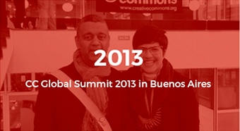
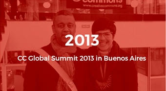
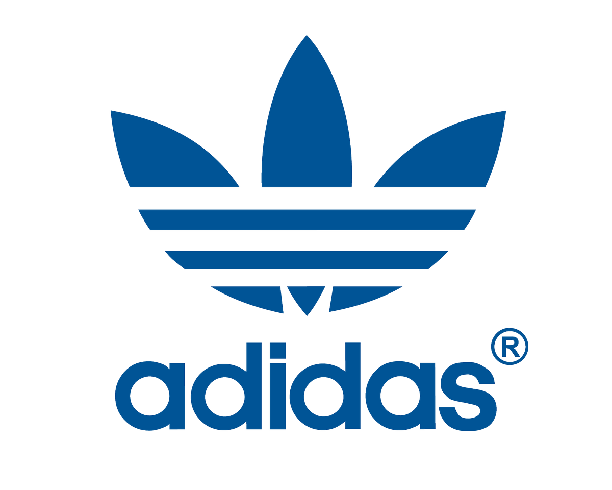
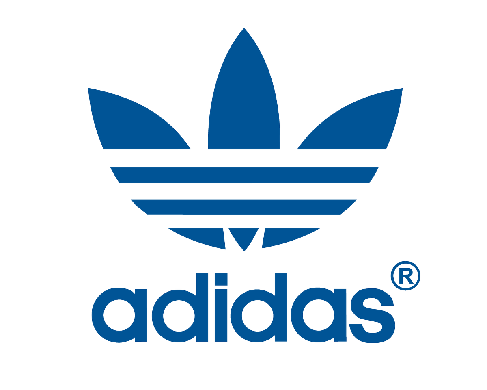

INNOVATIONX COMMONSAFRICA SUMMIT 2023
Welcome to InnovationX Summit Africa, the premier conference for innovation in Africa. This annual event brings together entrepreneurs, investors, academics, and policymakers to share insights and ideas about the latest trends and best practices in innovation. Our mission is to accelerate innovation in Africa and drive economic growth by connecting innovators with the resources and support they need to succeed.
Please contact us per email on any further questions about the InnovationX Africa Summit 2023! miyoyo@gmail.com
InnovationX Commons Africa Summit Logo
The InnovationX Commons Africa Summit logo was designed by a team of graphic designers who drew inspiration from the vibrant colors and patterns of African textiles and art. The logo symbolizes the diverse and interconnected community of innovators that the summit brings together to collaborate and create positive change in Africa.

See Past InnovationX Commons Africa Summit Fora
Take a look at the last two InnovationX Commons Africa Summit fora that happened in Bueno Aires and in Warsaw.
 

Partner


 
